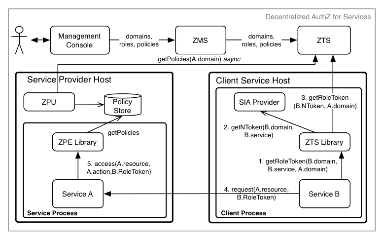

Java Client/Servlet Example - Decentralized Access Control
- Required Components
- Service Definition
- Resource Definition
- Athenz Management Setup
- Code Changes
- Deploying Example Servlet
- Test Cases
In the decentralized access control model, the client service/user presents an authentication token (NToken) from SIA Provider to get an authorization token (ZToken) from ZTS, and then presents the ZToken to a target service to access its resources.

The required steps to setup the environment for provider and tenant services to support decentralized access control are as follows:
- System administrator creates the provider and tenant domains.
- Tenant Domain administrator generates a public/private key pair and registers a service in its domain.
- Provider Domain administrator creates a role and policy that grants access to the given role with configured action and resource.
- Provider Domain administrator adds the Tenant Service to the role to grant access.
- Provider Domain administrator installs Athenz Policy Engine Updater (ZPU) on the hosts that will be running the provider service. ZPU must be configured with the provider domain name and setup to run as a cron job to periodically download the latest policy files for the server/provider domain.
- Tenant Domain administrator installs the private key on the host that will be running the client/tenant service.
Required Components
To support centralized access control in your applications, you only need to install and configure all Athenz components: ZMS and ZTS servers along with the Athenz UI. ZPE Policy updater needs to be install on the target service host. Please follow these guides to make sure you have all of these components up and running in your environment:
On the provider service's host only install ZPU:
To build the client and servlet components of this example, you need to download and install Oracle JDK 8, Apache Maven and Git client if you don't already have these available on your box:
Service Definition
Let's first define our service that needs to be Athenz protected. We have a simple recommendation service that returns either a movie or tv show for the caller. It has two endpoints:
GET /rec/v1/movie
GET /rec/v1/tvshow
So in this first release we just want to protect access to these endpoints. We're going to get large number of requests per second so contacting ZMS server for centralized authorization checks is not an option. Instead, we have decided to use Athenz' decentralized authorization model.
Resource Definition
Defining resources and actions the principals are authorized to execute is one of the most important tasks in the authorization process. Based on our endpoints, it's expected that we'll have 2 general resources:
movie
tvshow
The resources are referenced in their own domain namespace. So those are valid if your domain is specifically created to support this recommendation service only. But's lets assume we might add rental support later, so we need to make sure the policies are based on service specific resources. So we'll define our resources as:
rec.movie
rec.tvshow
Support action for these resources would be read. We can extend
our authorization policies later on if we need to introduce other
actions - such as write or list as we add more functionality into
our service.
Athenz Management Setup
Once we have defined what our resources and actions are, we can create their respective client and server (also commonly referred as tenant and provider) roles and policies in Athenz. Go to Athenz UI and login with your account which should have system administrator access. Follow the instructions in the following guide to setup the required access control:
Code Changes
Both the client and servlet implementors need to make changes in their respective code bases to support decentralized authorization checks. The client needs to make sure to retrieve its role token from ZTS Service and submit that as part of its request, while the servlet needs to carry out the authorization check based on that role token to determine if it request should be processed or not.
Client Changes
The full client source code is available from:
https://github.com/yahoo/athenz/tree/master/examples/java/decentralized-use-case/client
Client Project Dependency Update
First you need to update your Java project pom.xml file to indicate
the dependency on the Athenz auth_core and zts java client libraries. Checkout the
Bintray Auth-Core Package
and Bintray ZTS Java Client Package
pages to make sure you're using the latest release version:
<dependency>
<groupId>com.yahoo.athenz</groupId>
<artifactId>athenz-auth-core</artifactId>
<version>1.7.13</version>
</dependency>
<dependency>
<groupId>com.yahoo.athenz</groupId>
<artifactId>athenz-zts-java-client</artifactId>
<version>1.7.13</version>
</dependency>
<repositories>
<repository>
<id>bintray-yahoo-maven</id>
<name>bintray</name>
<url>https://yahoo.bintray.com/maven</url>
</repository>
</repositories>
Obtaining ZTokens from ZTS Server
The domain administrator must have already generated a public/private key pair for the service and registered public key in Athenz. The private key must be available on the host where the client will be running. First, we need generate our service identity provider:
// the fields used in the following snippet of code
// privateKeyPath -> includes the path to the service's private key file
// the corresponding public key is already registered in Athenz
// domainName -> 'editors'
// serviceName -> 'movie', 'tvshow' or 'site'
// keyId -> 'v0'
PrivateKey privateKey = Crypto.loadPrivateKey(new File(privateKeyPath));
ServiceIdentityProvider identityProvider = new SimpleServiceIdentityProvider(domainName,
serviceName, privateKey, keyId);
Then, we need to contact ZTS Server to retrieve a role token for the given service identity (provided by the ServiceIdentityProvider) accessing a target service domain:
// the fields used in the following snippet of code
// ztsUrl -> ZTS Server Url
// domainName -> 'editors'
// serviceName -> 'movie', 'tvshow' or 'site'
// identityProvider -> service identity provider created above
// providerDomain -> 'recommend'
// providerRole -> 'movie_editors, tvshow_editors, full_access'
RoleToken roleToken = null;
try (ZTSClient ztsClient = new ZTSClient(ztsUrl, domainName, serviceName,
identityProvider)) {
roleToken = ztsClient.getRoleToken(providerDomain, providerRole);
}
Once we have our RoleToken object, then the client before contacting the provider service needs to include the retrieved token in the request as the value of Athenz-Role-Auth header.
// set our Athenz credentials. The ZTSClient provides the header
// name that we must use for authorization token while the role
// token itself provides the token string (ztoken).
con.setRequestProperty(ZTSClient.getHeader(), roleToken.getToken());
Build Http Client Utility
Checkout and build the client component:
$ git clone https://github.com/yahoo/athenz.git
$ cd examples/java/decentralized-use-case/client/
$ mvn clean package
Verify that the client is built successfully:
$ java -cp target/example-java-client-ztoken-1.0.jar com.yahoo.athenz.example.ztoken.HttpExampleClient
Missing required options: d, s, p, k, u, z, pd, pr
usage: http-example-client
-d,--domain <arg> domain name
-k,--keyid <arg> key identifier
-p,--pkey <arg> private key path
-pd,--provider-domain <arg> Provider domain name
-pr,--provider-role <arg> Provider role name
-s,--service <arg> service name
-u,--url <arg> request url
-z,--ztsurl <arg> ZTS Server url
Servlet Changes
The full servlet source code is available from:
https://github.com/yahoo/athenz/tree/master/examples/java/decentralized-use-case/servlet
Servlet Project Dependency Update
First you need to update your Java project pom.xml file to indicate
the dependency on the Athenz ZPE Java Client Library. Checkout the
Bintray ZPE Client Package Page
to make sure you're using the latest release version:
<dependency>
<groupId>com.yahoo.athenz</groupId>
<artifactId>athenz-zpe-java-client</artifactId>
<version>1.7.13</version>
</dependency>
<repositories>
<repository>
<id>bintray-yahoo-maven</id>
<name>bintray</name>
<url>https://yahoo.bintray.com/maven</url>
</repository>
</repositories>
Authorization Checks
First, we need to make sure the servlet initialization time, Athenz ZPE Client library is initialized so it can process and load any domain policy documents retrieved by ZPE Policy Updater.
public void init() throws ServletException {
// initialize Athenz ZPE client which will load
// all policy files into memory
AuthZpeClient.init();
}
Before any authorization calls, we're going to check to make sure our request contains the Athenz role token:
static final String ATHENZ_HEADER = "Athenz-Role-Auth";
protected void doGet(HttpServletRequest request,
HttpServletResponse response) throws ServletException, IOException {
// retrieve and verify that our request contains an Athenz
// role authorization token
String athenzRoleToken = request.getHeader(ATHENZ_HEADER);
if (athenzRoleToken == null) {
response.sendError(403, "Forbidden - No Athenz RoleToken provided in request");
return;
}
...
}
Next, the most important part is to determine the resource and action based on the given http request.
protected void doGet(HttpServletRequest request,
HttpServletResponse response) throws ServletException, IOException {
...
switch (reqUri) {
case "/movie":
responseText = "Name: Slap Shot; Director: George Roy Hill";
athenzResource = "rec.movie";
athenzAction = "read";
break;
case "/tvshow":
responseText = "Name: Middle; Channel: ABC";
athenzResource = "rec.tvshow";
athenzAction = "read";
break;
default:
response.sendError(404, "Unknown endpoint");
return;
}
...
}
Once we have those two values determined, then all that is left is to use ZPE client library for the authorization check.
protected void doGet(HttpServletRequest request,
HttpServletResponse response) throws ServletException, IOException {
...
// carry out the authorization check with the expected resource
// and action values
AccessCheckStatus status = AuthZpeClient.allowAccess(athenzRoleToken,
athenzResource, athenzAction);
if (status != AccessCheckStatus.ALLOW) {
response.sendError(403, "Forbidden - Athenz Authorization Rejected");
return;
}
...
}
Build Servlet
Checkout and build the servlet component:
$ git clone https://github.com/yahoo/athenz.git
$ cd examples/java/decentralized-use-case/servlet/
$ mvn clean package
Deploying Example Servlet
- Download and install latest Jetty 9.3.x container
- Copy the
athenz-data.warfrom theservlet/targetdirectory to the Jetty distribution'swebappsdirectory - Configure ZPU to download the policy documents for domain
recommend.
$ vi <zpu-install-directory>/conf/zpe_policy_updater/zpu.conf
In the json file, edit the value for the domains field to be set to recommend.
Run the zpu utility to retrieve the policy documents from ZTS.
$ <zpu-directory>/bin/zpu_run.sh
$ ls -lat <zpe-directory>/var/zpe/recommend.pol
- Configure ZPE library to look for the policy file and the athenz.conf files in the expected directory:
$ export JAVA_OPTIONS="-Dathenz.zpe.policy_dir=<zpu-directory>/var/zpe -Dathenz.athenz_conf=<zpu-directory>/conf/zpe_policy_updater/athenz.conf"
- Start the Jetty server by running the following command from Jetty's distribution base directory:
bin/jetty.sh start
Test Cases
Run the following test cases to verify authorization access for specific services. We're running jetty server on the local box so we're using localhost as the hostname.
- Copy the
example-java-client-ztoken-1.0.jarfile from the client/target directory to the directory that includes the private keys for the test services we created in the section Athenz Management Setup above. - If the ZTS Server is running with a self-signed certificate,
we need to generate a truststore for the java http client to use
when communicating with the ZTS Server. From your ZTS Server installation,
copy the
zts_cert.pemfile from theathenz-zts-X.Y/var/zts_server/certsdirectory into the same directory where the client ztoken utility is saved (previous step) and execute the following commands:
$ keytool -importcert -noprompt -alias zts -keystore zts_truststore.jks -file zts_cert.pem -storepass athenz
Invalid Access Without RoleToken
For this test case we'll just use the curl client directly:
$ curl http://localhost:8080/athenz-data/rec/v1/movie
<html>
...
<title>Error 403 Forbidden - No Athenz RoleToken provided in request</title>
...
</html>
Movie Editor Access
Movie service can successfully access /rec/v1/movie endpoint:
$ java -Djavax.net.ssl.trustStore=./zts_truststore.jks -cp ./example-java-client-ztoken-1.0.jar com.yahoo.athenz.example.ztoken.HttpExampleClient -d editors -s movie -p ./movie_private.pem -k v0 -pd recommend -pr movie_editors -z https://<zts-server>:8443/zts/v1 -u http://localhost:8080/athenz-data/rec/v1/movie
Successful response:
Name: Slap Shot; Director: George Roy Hill
Movie service does not have access to /rec/v1/tvshow endpoint:
$ java -Djavax.net.ssl.trustStore=./zts_truststore.jks -cp ./example-java-client-ztoken-1.0.jar com.yahoo.athenz.example.ztoken.HttpExampleClient -d editors -s movie -p ./movie_private.pem -k v0 -pd recommend -pr movie_editors -z https://<zts-server>:8443/zts/v1 -u http://localhost:8080/athenz-data/rec/v1/tvshow
Request was forbidden - not authorized
TvShow Editor Access
TvShow service can successfully access /rec/v1/tvshow endpoint:
$ java -Djavax.net.ssl.trustStore=./zts_truststore.jks -cp ./example-java-client-ztoken-1.0.jar com.yahoo.athenz.example.ztoken.HttpExampleClient -d editors -s tvshow -p ./tvshow_private.pem -k v0 -pd recommend -pr tvshow_editors -z https://<zts-server>:8443/zts/v1 -u http://localhost:8080/athenz-data/rec/v1/tvshow
Successful response:
Name: Middle; Channel: ABC
TvShow service does not have access to /rec/v1/movie endpoint:
$ java -Djavax.net.ssl.trustStore=./zts_truststore.jks -cp ./example-java-client-ztoken-1.0.jar com.yahoo.athenz.example.ztoken.HttpExampleClient -d editors -s tvshow -p ./tvshow_private.pem -k v0 -pd recommend -pr tvshow_editors -z https://<zts-server>:8443/zts/v1 -u http://localhost:8080/athenz-data/rec/v1/movie
Request was forbidden - not authorized
Site Editor Access
Site service has access to both /rec/v1/tvshow and /rec/v1/movie endpoints:
$ java -Djavax.net.ssl.trustStore=./zts_truststore.jks -cp ./example-java-client-ztoken-1.0.jar com.yahoo.athenz.example.ztoken.HttpExampleClient -d editors -s site -p ./site_private.pem -k v0 -pd recommend -pr full_access -z https://<zts-server>:8443/zts/v1 -u http://localhost:8080/athenz-data/rec/v1/movie
Successful response:
Name: Slap Shot; Director: George Roy Hill
$ java -Djavax.net.ssl.trustStore=./zts_truststore.jks -cp ./example-java-client-ztoken-1.0.jar com.yahoo.athenz.example.ztoken.HttpExampleClient -d editors -s site -p ./site_private.pem -k v0 -pd recommend -pr full_access -z https://<zts-server>:8443/zts/v1 -u http://localhost:8080/athenz-data/rec/v1/tvshow
Successful response:
Name: Middle; Channel: ABC
Other Test Cases
Now you can modify the movie_editos, tvshow_editors, and site_editors roles
in the recommend domain to add and remove the defined services. After you
make the changes, it will take about a minute for the updates to propagate
from ZMS to the ZTS Server. Then you need to run the zpu_run.sh command again
to fetch the updated policy files for the domain onto your host. Then you can
run the corresponding test cases to verify your access change.